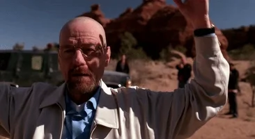

Season 4 (2011)
On June 14, 2010, AMC announced Breaking Bad was renewed for a fourth, 13-episode season. Production began in January 2011, the season premiered on July 17, 2011, and concluded on October 9, 2011. Originally, mini episodes of four minutes in length were to be produced before the premiere of the fourth season, but these did not come to fruition.Gus tightens security at the lab after Gale's death. Gus and Mike drive a wedge between Walt and Jesse, coercing Jesse to be their solitary cook while at the same time eliminating the Mexican cartel. Skyler accepts Walt's meth cooking and conspires with Saul to launder the earnings. Hank, in recovery, tracks Gale's death to Gus and the drug trade. Walt tricks Jesse into turning against Gus, and convinces Hector Salamanca, the last living member of the cartel, to detonate a bomb while meeting with Gus, killing them both. 